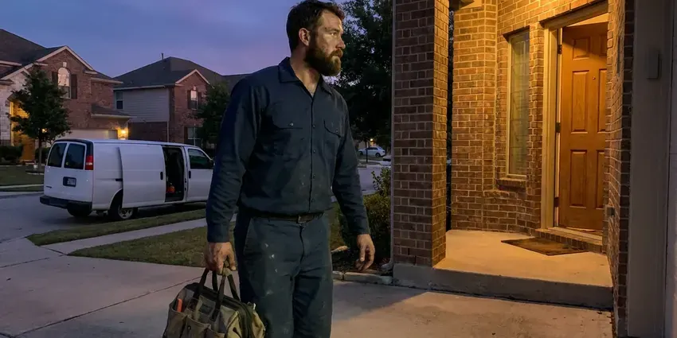

Plumbers Near Me in Marysville, WA
For reliable plumbing services in Marysville, WA, look no further than FHN Plumbing. We provide expert solutions for every plumbing challenge.
- Upfront Quotes
- Quick Local Service
- Upfront Flat-Rate Prices
- Upfront Prices
Leak, Clog or No Hot Water? Call Your Neighborhood Plumber in Marysville, WA.
Call us for prompt and professional plumbing solutions suited to your home's needs.
Trusted Plumbers Near Me for Marysville, WA Homeowners
FHN Plumbing is a full-service plumbing company with licensed plumbers working throughout the area. We repair leaks, clear drains, install water heaters, replace fixtures and handle gas and water line work, all with written pricing before work starts.
Our expertise includes:
- Install and service water heaters, including tankless.
- Leak detection and repair on copper, PEX and galvanized pipe
- Water heater, softener and pressure regulator installation and repair

Additional Plumbing Maintenance Services in Marysville, WA
Our maintenance and specialty plumbing services in Marysville, WA catch small problems before they become emergencies.


Customers
Why Choose FHN Plumbing for Plumbers Near Me in Marysville, WA?
Choosing FHN Plumbing means partnering with a team that prioritizes your comfort and safety. We're dedicated to delivering high-quality plumbing services with transparent pricing and attentive customer care.
- Rapid Response, For plumbing emergencies, our team is ready to respond quickly to minimize damage and restore your peace of mind.
- Local Expertise, Our plumbers understand the effects of Marysville's soil and water conditions, which can impact plumbing systems.
- Licensed Pros, Every job is handled or supervised by a licensed Washington plumbing contractor.
Citywide Coverage
We are committed to providing fast and reliable plumbing services throughout all of Marysville, WA. Our broad local coverage means we can respond efficiently to emergencies and scheduled appointments alike.
Experienced Team
The FHN Plumbing plumbing team is made up of committed professionals who take pride in their craft. They have deep knowledge of plumbing systems, allowing them to diagnose problems accurately and deliver effective, long-lasting solutions for our Marysville customers.
Safety-First Approach
Safety is paramount in all our plumbing operations. We adhere strictly to all local and state plumbing codes in Washington, so every repair, installation, or maintenance service meets high safety and quality standards.
Trusted Certified Marysville Plumbing Services Professionals
At FHN Plumbing, we take pride in providing certified plumbing services throughout Marysville, WA. Backed by leading industry credentials, our experienced plumbers combine technical skill with genuine customer care. Whether it is repair, installation, or maintenance, we follow strict safety and quality standards to deliver lasting results you can trust.
Call Us Now PHCC Plumbing Contractor Recognition
PHCC Plumbing Contractor Recognition Better Business Bureau (BBB) Accreditation
Better Business Bureau (BBB) Accreditation Angi Certified Pro
Angi Certified Pro ISO 9001 Quality Management Certification
ISO 9001 Quality Management CertificationTrusted Plumbers Near Me Services in Marysville, WA
Leak Detection & Repair in Marysville
Even small leaks can cause serious damage over time, especially where humidity can speed mold growth. Our plumbers use advanced diagnostic tools like acoustic leak detectors and thermal imaging to locate hidden leaks in walls, floors, and underground pipes. We then provide precise, non-invasive repairs for everything from dripping faucets and toilet leaks to slab leaks and burst pipes, preventing further water waste and structural damage in your Marysville home.

Commercial Plumbing Service in Marysville, WA
Restaurants, offices, salons and retail spaces need plumbing that works every day. We handle commercial water heaters, grease traps, backflow testing, restroom fixtures and drain lines. Preventive maintenance plans reduce downtime and surprise repairs. We can schedule work before or after business hours to suit you.
Drain Cleaning & Clog Removal in Marysville
Stubborn clogs can disrupt daily life. Our plumbers use advanced techniques, including hydro-jetting and camera inspections, to effectively clear blockages from sinks, toilets, showers, and main sewer lines. We identify the cause of the clog, whether it's grease buildup or tree roots common in Marysville's older neighborhoods, and make sure your drains flow freely.
Slab Leak Detection & Repair in Marysville, WA
Glacial till and dense hardpan are common in western Washington, and they drain poorly enough to keep water against foundations and in crawlspaces. Slab leaks are a serious issue that can damage foundations. Our team uses non-invasive acoustic and thermal imaging equipment to pinpoint hidden leaks under your home's concrete slab. We then perform precise repairs, limiting disruption and protecting your foundation from costly long-term damage in Marysville, WA.
Water Heater Services in Marysville
Reliable hot water is essential, and our plumbers handle both tank and tankless water heater services. We handle everything from routine maintenance and minor repairs, such as anode rod replacement or flushing sediment buildup, to complete new installations. Whether you're upgrading to a more energy-efficient tankless model or replacing an aging conventional unit, we make sure of proper sizing and installation according to Marysville's plumbing codes, for consistent hot water for your household.
Sewer Line Repair & Replacement in Marysville, WA
Sewer line problems can be messy and disruptive. Glacial till and dense hardpan are common in western Washington, and they drain poorly enough to keep water against foundations and in crawlspaces. Shifting ground can put stress on older sewer pipes, leading to cracks or collapses. Our team offers complete sewer line solutions, including trenchless repair options like pipe bursting and relining, which minimize yard disruption. We also perform traditional excavation when needed, addressing issues like root intrusion, pipe corrosion, and blockages to restore proper drainage for your Marysville, WA property.
Drain Cleaning and Sewer Service in Marysville, WA
Clogged sinks, tubs and toilets are among the most common calls we take. We clear drains with cables and jetters sized to the pipe, then test for full flow. For repeat or whole-house backups, we inspect the main sewer line with a camera. We explain what caused the clog and how to prevent it.

Gas Line Repair and Installation in Marysville
We repair and install gas lines for water heaters, ranges, dryers, fireplaces and outdoor kitchens. All gas work is pressure tested, and we pull permits when the local code requires them. If you smell gas, leave the home and call your gas utility first, then call us for the repair. We use approved materials such as black iron and CSST with proper electrical bonding.
Why Choose FHN Plumbing for Plumbers Near Me in Marysville, WA?
When something goes wrong with your plumbing, you want help from a team that is already in your area. Our plumbers live and work around Marysville, so we arrive faster and know the local housing stock. That means quicker diagnosis and fewer surprises.
When you search for 'plumbers near me' in Marysville, WA, you're looking for local know-how and fast service. Our team is familiar with the plumbing infrastructure across the entire Marysville area. This local focus allows us to provide faster response times and more tailored solutions for the common plumbing issues found in Washington homes.
FHN Plumbing at a Glance
- Licensed and insured plumbers serving Marysville, WA
- Same-day appointments and 24/7 emergency response
- Clear written estimates, no hidden fees
- 4.9-star rated by 382+ Washington customers
Marysville Map
Marysville Information
- Population
- 72,916
- Area codes
- 360/425/206
- Service area
- Marysville and communities within 40 miles
- Nearby
- Everett, Bothell, Shoreline, Mount Vernon
East side homes near Marysville and beyond face bigger temperature swings, which put extra stress on pipes, fittings and outdoor plumbing. That makes solid and code-compliant plumbing services essential for homes in Marysville, WA to prevent costly damage and protect long-term system integrity.
Expert Services
Trust our professionals for reliable FHN Plumbing solutions in Marysville, WA.
Our Specialized Plumbing Services in Marysville, WA
At FHN Plumbing, we provide a complete range of plumbing services across Marysville, WA. From leak detection to full system installations, our team ensures fast, precise, and affordable service for both residential and commercial properties. Explore our core services below:


How Our Plumbers Near Me Process Works in Marysville, WA
Our process is designed to make booking a plumber easy and keep you in the loop at every step.
Request a Quote
Call us at (425) 491-3131 or fill out our online form to schedule an appointment. We'll gather basic information about your plumbing issue and set up a convenient time for a technician to visit your Marysville home.
On-Site Diagnosis
A licensed plumber will arrive at your home, conduct a thorough inspection, and pinpoint the problem. They will explain their findings clearly and discuss all available repair or replacement options.
Upfront Pricing
Before any work begins, you'll receive a clear, transparent quote outlining the cost of the service. We believe in no surprises, so you'll know the exact price for the plumbing work in Marysville.
Frequently Asked Questions About Plumbers Near Me in Marysville
Plumbing costs in Marysville can vary widely depending on the type and complexity of the service. A basic service call or minor repair, like a faucet drip, might range from $150-$300. More involved jobs, such as water heater replacement or slab leak repair, can range from $800 to several thousand dollars. We provide upfront, transparent pricing after diagnosing the issue.
Water heater replacements, gas line work, repipes and new fixtures in additions often require a permit. Minor repairs usually do not. We handle permits when they are needed.
Yes. Most calls placed in the morning can be handled the same day. Emergency service is available for urgent problems like burst pipes and sewage backups.
Generally, if your water heater is more than 10-12 years old, frequently breaks down, or requires expensive repairs, replacement is often the more cost-effective option in the long run. Newer models are also significantly more energy-efficient. Our plumbers can assess your unit in Marysville and provide an honest recommendation.
Soft water can be slightly corrosive to copper over time, which sometimes shows up as pinhole leaks in older supply lines. Hard water leaves mineral scale on faucets, showerheads and inside water heaters and pipes. Over time this reduces flow and shortens the life of fixtures and appliances. A water softener can help protect your plumbing.
While minor clogs or drips might be DIY-friendly, most plumbing issues are best left to professionals. Attempting complex repairs without the right tools or expertise can lead to more significant damage, costly mistakes, or even safety hazards, especially with gas lines or structural plumbing. Professional plumbers have the training, tools, and experience to diagnose and fix problems correctly and safely.
Yes. Our company holds the plumbing license required in Washington, and our plumbers are trained and overseen accordingly. Plumbers in Washington must hold a state certification, and water heater replacements and repiping typically require a permit. We also carry liability insurance and workers compensation.
Signs of a slab leak in your Marysville home include unexplained high water bills, warm spots on your floor, the sound of running water when all fixtures are off, visible cracks in the foundation, or mildew odors. If you suspect a slab leak, it's crucial to call a professional for immediate detection and repair to prevent structural damage.
What People Are Saying About Our Plumbing Experts?

Mark T.
When our office needed drain cleaning, FHN Plumbing provided quick, reliable service. The plumber arrived on time and made sure every drain flowed perfectly before leaving. Very satisfied.
Drain Cleaning · Redmond, WA
Robert G.
The trenchless sewer replacement saved our front yard. They walked us through the camera inspection footage first so we knew exactly what we were paying for.
Sewer Line Replacement · Marysville, WA
Sofia M.
Two new toilets installed in one visit, no mess left behind, and the tech even adjusted a faucet he noticed was dripping. Fair pricing and really friendly.
Toilet Installation · Redmond, WAJames P.
Our commercial plumbing system had a leak under the sink, and FHN Plumbing handled it professionally. The plumbers arrived quickly and restored everything without disruption to our customers.
Commercial Plumbing · Everett, WA
Emily R.
I called FHN Plumbing for plumbing repair, and the technician was fast, polite, and thorough. They explained the problem clearly and fixed it the same day. I will definitely hire them again. Highly recommended!
Plumbing Repair · Bothell, WA
Daniel K.
A pipe burst at 11 pm and they actually answered. The plumber showed up within the hour, shut everything down, and had us back to normal the next morning. Could not ask for more.
Emergency Plumbing · Kirkland, WA